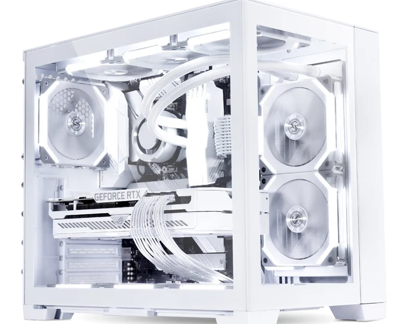
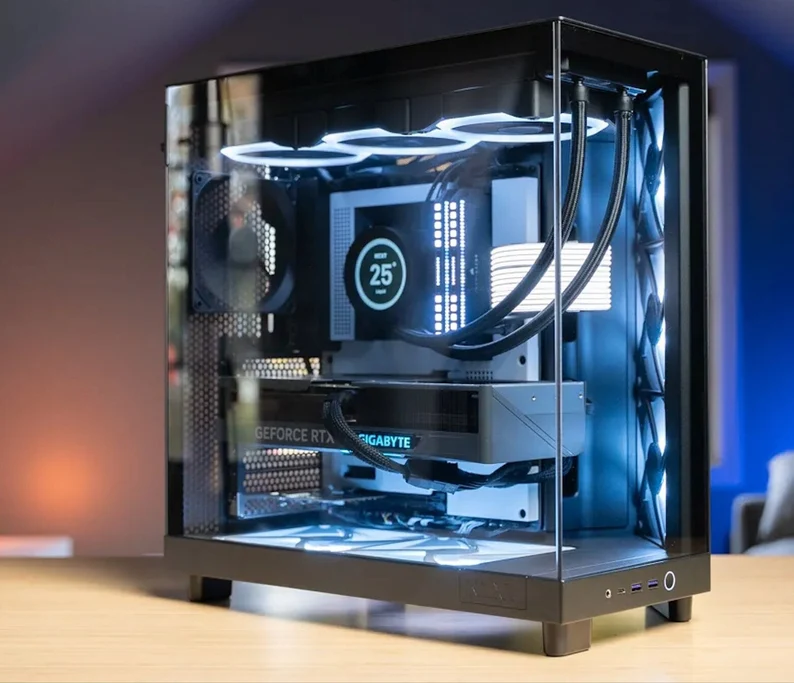

ABOUT US CONTACT SERVICE & REPAIR LATEST BUILDS

We specialize in building custom computers for all types of users. Whether you need a high-end gaming rig or a budget-friendly desktop, we've got you covered.

At Stabby Computer Systems, we also offer repair and upgrade services. Bring your system in for a quick and affordable fix!
Welcome to Stabby Computer Systems – your trusted partner for all things tech! We specialize in building, repairing, and upgrading custom computers tailored to your needs.
Founded with a passion for technology and a commitment to customer satisfaction, Stabby Computer Systems is here to solve your computer woes and deliver high-performance systems that won’t let you down.
This site proudly produced by Front Page Windows 98 Edition and hosted through GitHub.